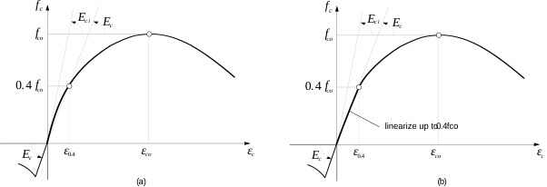
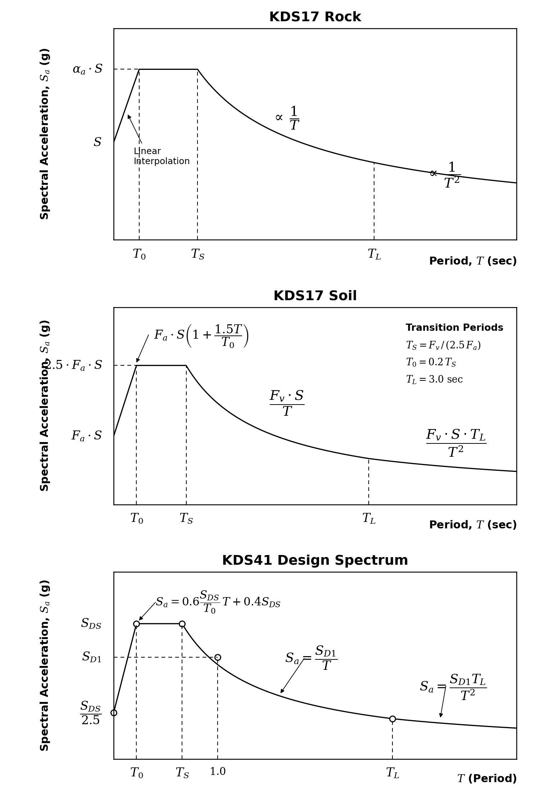
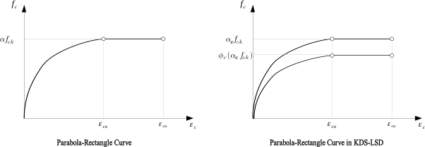
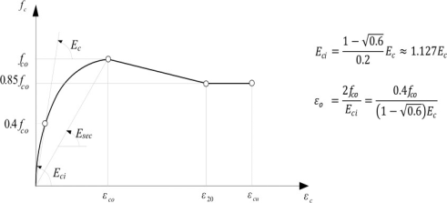
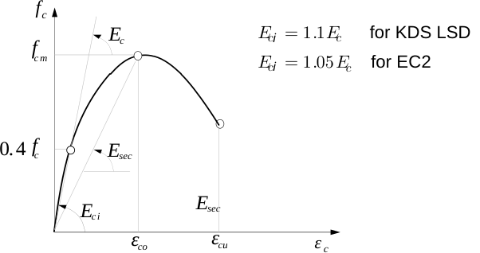
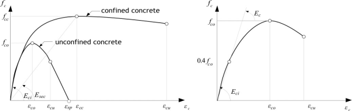

8. Function
*Function은 이름이 있는 함수 객체를 정의한다. 정의된 함수는 재료모델의 포락선이나 하중 시간이력 등에서 참조한다. 이름은 전역적으로 고유해야 하며 중복 지정할 수 없다.
함수 관련 명령어는 \(y=f(x)\) 또는 \(y_1=f_1(x), y_2=f_2(x), ...\) 형태의 관계를 만든다. 일부 function type은 DB source를 지원한다. TimeSignal은 시간이력 DB record를 읽고, 콘크리트 관련 function type은 콘크리트 DB item에서 압축, 인장, 시간의존 물성치를 만든다.
*Function, Type=TimeSignal: 시간이력 DB*Function, Type=ParabolaCEnv|HognestadCEnv|EC2CEnv|MPPCEnv: 콘크리트 DB 압축 거동*Function, Type=MaekawaTEnv: 콘크리트 DB 인장 거동*Function, Type=ConcreteTime: 콘크리트 DB 시간의존 물성
TimeSignal DB 입력은 *Function, Type=TimeSignal 절을 참고한다. 아래에서는 콘크리트 DB 공통사항을 먼저 설명한다.
콘크리트 DB 개요
콘크리트 DB item은 Material dataline에 직접 입력하는 재료 이름이 아니라, concrete *Function dataline에서 선택한 function model의 파라미터를 채우는 입력 source다. 현재 기본 제공 envelope DB item 형식은 KDS-2026-C<fck>, ACI318-2025-C<fck>, EC2-2004-C<fck>이고, 시간의존 DB item 형식은 KDS-2026-C<fck>, EC2-2004-C<fck>, ACI209-1992-C<fc>다. 각 function type마다 허용하는 DB 기준이 다르며, UGeneric 같은 material dataline에서는 DB item이 아니라 생성된 function 이름을 참조한다.
가장 먼저 구분해야 할 대상은 ParabolaCEnv다. ParabolaCEnv DB 입력은 단면해석용 포물선 압축 관계를 만드는 별도 입력이다. 아래에서 소개하는 DB 파생 콘크리트 물성치 묶음, 즉 fcm, Ec, Eci, ft와 model별 recipe 매핑을 사용하지 않는다. DB에서 얻는 값은 단면해석용 fck, n, eco, ecu이며, 선택 token alpha는 fck에 설계 저감을 적용한다. ACI318-2025-C<fck>는 ParabolaCEnv DB 입력으로 받지 않는다.
반대로 HognestadCEnv, EC2CEnv, MPPCEnv, MaekawaTEnv는 DB item에서 도출한 콘크리트 역학 물성치를 Hyfeast 기본 recipe의 입력값으로 사용한다. ConcreteTime은 기준별 재령, 크리프, 수축 식을 사용한다. 아래 reference는 각 기준마다 역학 물성치와 시간의존 물성치를 함께 읽을 수 있도록 기준별로 정리한다.
콘크리트 envelope에서 Type은 생성할 함수 모델을 의미한다. 따라서 직접 수치로 파라미터를 입력할 때와 DB item으로 파라미터를 가져올 때 모두 같은 Type을 유지한다. 예를 들어 Type=ParabolaCEnv에서 dataline이 fck, n, eco, ecu, alpha이면 직접 수치 입력이고, KDS-2026-C30, EC2-2004-C30이면 같은 Parabola 모델의 단면해석용 파라미터를 DB에서 가져오는 입력이다. TimeSignal DB record도 별도 function type을 만들지 않고 Type=TimeSignal의 source line에서 DB, recordName[, scaleFactor] 형식으로 참조한다.
콘크리트 물성 DB를 쓰는 Function 입력은 *Environment, Type=UnitSystem으로 global UnitSystem이 먼저 정의되어 있어야 한다. DB 원천값은 parser가 현재 global UnitSystem으로 변환한다. 이 입력에서는 keyword line의 UnitSystem을 지정할 수 없으며, 지정하면 입력 오류로 처리한다. TimeSignal DB source line은 record 자체의 unit metadata를 따르며, 세부 규칙은 Type=TimeSignal 절을 따른다.
콘크리트 envelope DB item dataline의 마지막 token에 ToDirectForm을 붙이면 저장/재출력 시 DB item이 해석된 직접 수치 파라미터로 출력된다. 전개된 숫자는 현재 global UnitSystem 기준이며, 그 단위계가 global UnitSystem과 같으면 keyword line에 local UnitSystem을 붙이지 않는다. ToDirectForm이 없으면 저장/재출력 시 DB item dataline을 보존하고 keyword line에 local UnitSystem을 붙이지 않는다. HognestadCEnv, EC2CEnv, MPPCEnv에서는 ToDirectForm 앞에 EciCurve를 둘 수 있다. 생략하면 HognestadCEnv와 EC2CEnv는 원점부터 0.4*fco 또는 0.4*fcm까지를 Ec 기울기의 직선으로 사용하고, MPPCEnv는 비구속 할선 Ec에서 내부 곡선을 산정한 뒤 현재 0.4 강도점까지를 직선으로 사용한다.

Fig. 8.2-0. Concrete envelope initial curve option
Function type별 DB dataline 문법은 뒤의 각 Type= 절에서 다룬다. 이 앞 reference는 기준별 물성치와 단위계만 정리한다.
콘크리트 DB 공통 규칙
아래 기준별 소절은 같은 순서로 읽는다.
- DB item 형식과 원천 단위: envelope DB item 이름, 가능한 경우
ConcreteTimeitem 이름, 기준식 평가 단위를 먼저 밝힌다. - 역학 envelope 물성치: concrete envelope function에서 사용하는 28일 기준 물성치와 strain 계수다.
- ConcreteTime 시간의존 물성치: 같은 기준의 재령, 크리프, 수축 series다. 여기서는 앞의 역학 물성치를 다시 쓰지 않고, 시간의존식에 추가로 필요한 계수만 적는다.
ConcreteTime은 다음 여섯 series를 순서대로 저장한다.
사용자 정의 함수 묶음은 이후 콘크리트 재료에서 다음 형태로 사용하는 것을 의도한다.
수축은 양의 수축 크기와 Hyfeast에 저장되는 signed 수축/팽창 변형률을 구분한다. 사용자 정의 shrinkage Function의 \(e_{sh}(t)\), EC2의 \(\varepsilon_{cd}\), \(\varepsilon_{ca}\), ACI의 \(\varepsilon_{sh,u}\)는 양의 수축 크기이다. 최종 series \(\varepsilon^{sh}(t)\)는 Hyfeast 저장값이며, 수축은 음수, 팽창은 양수로 저장한다. KDS 식에서는 계산된 \(\varepsilon^{sh}(t)\) 자체를 signed 저장값으로 쓰며, \(RH<99\%\)에서는 음수 수축, \(RH\ge99\%\)에서는 양수 팽창이 된다.
여기서 \(t\)는 콘크리트 재령, \(\tau\)는 재하재령, \(t-\tau\)는 크리프 지속기간이다. 표준 및 User ConcreteTime 입력은 이 재령 변수를 day 단위로 평가하므로, 이를 사용하는 Static, Quasi step은 TUnit=day여야 한다. global UnitSystem의 time field를 day로 바꾸라는 의미는 아니다. ConcreteTime 자체는 \(\tau\)를 결정하지 않는다. 이후 콘크리트 재료 구현이 해석 상태에서 \(\tau\)를 제공한다.
여기서 \(C(t,\tau)\)는 무차원 크리프 계수 \(\phi(t,\tau)\)가 아니라 크리프 컴플라이언스이다. \(c_r\)를 무차원으로 두면 \(c_l\)은 응력의 역수 단위를 가진다.
KDS와 EC2의 내장 크리프식은 같은 분리형을 사용한다. 지속기간 항은 무차원이고, 재하재령 항에는 탄성계수 분모가 포함된다. 기준별 절에서는 \(E_{ci,28}\), \(\phi_{RH}\), \(\beta_H\)만 따로 제시한다.
ConcreteTime에는 keyword line UnitSystem을 지정할 수 없다. User dataline은 기존 function 이름만 참조하므로 입력 시점에 global UnitSystem을 요구하지 않는다. 여섯 참조 Function은 ConcreteTime이 전달하는 day 기준 \(x\) 값으로 평가하므로, 참조 Function에는 keyword line UnitSystem=...을 지정할 수 없다.
ConcreteTime 기준식 dataline은 global *Environment, Type=UnitSystem이 필요하지만, 기준식 자체의 입력 단위는 각 기준에서 정한 단위로 고정한다. EC2/KDS 강도는 MPa, ACI 강도는 psi, EC2/KDS h0는 mm, ACI 209 V/S와 slump는 inch, 시간 변수는 day 단위로 입력한다. parser는 이 길이 입력을 global 길이 단위에서 다시 변환하지 않는다. 크리프 컴플라이언스 분모의 탄성계수는 저장 전에 현재 global 응력 단위로 변환한다.
KDS-2026 콘크리트 DB
DB item 형식과 원천 단위. KDS envelope function은 KDS-2026-C<fck>를 사용하고, ConcreteTime도 같은 KDS-2026-C<fck> item 형식을 사용한다. 강도와 탄성계수는 MPa, 길이 파라미터는 mm, 시간 변수는 day 단위로 평가한다.
역학 envelope 물성치 (KDS-2026-C<fck>).
이 \(E_c\) 식은 KDS의 보통중량콘크리트 \(m_c=2300\,\mathrm{kg/m^3}\) 가정을 적용한 식이며, material density 값으로 다시 계산하지 않는다. fck가 90 MPa을 초과하면 직접 수치 입력을 사용해야 한다.
EC2CEnv 비선형해석용 변형률 계수. KDS DB 입력에서는 강도를 MPa 단위로 평가하고 변형률은 무차원 값이다.
ConcreteTime 시간의존 물성치 (KDS-2026-C<fck>).
KDS-2026-C<fck>의 시간의존식은 위의 \(f_{cm}\)과 \(E_c\)를 28일 기준값으로 사용한다. \(h_0\)는 mm 단위, 시간 변수 \(t\), \(\tau\), \(t_s\)는 day 단위로 평가한다. 크리프 컴플라이언스 분모에는 다음 초기탄성계수를 사용한다.
재령계수는 다음과 같다.
재령계수 산정용 \(\beta_{sc,a}\)는 Type1에서 Moist 0.35와 Steam 0.15, Type2에서 0.40과 0.40, Type3에서 0.25와 0.12, Type5에서 0.35와 0.15이다.
크리프는 공통 KDS/EC2 분리형을 사용하며, KDS의 습도 및 크기 계수는 다음과 같다.
KDS 식에서는 \(\varepsilon_s(f_{cm})\)와 \(\beta_s\)가 양수이고, \(RH<99\%\)에서 \(\beta_{RH}<0\), \(RH\ge99\%\)에서 \(\beta_{RH}=0.25>0\)이다. 따라서 \(\varepsilon^{sh}(t)\)는 일반 건조 조건에서는 음수 수축, 포화에 가까운 조건에서는 양수 팽창으로 계산되며, 별도의 앞쪽 음수 부호를 더 붙이지 않고 계산값을 Hyfeast의 signed 수축/팽창 변형률로 저장한다.
수축식의 \(\beta_{sc,s}\)는 Type2에서 4, Type1 또는 Type5에서 5, Type3에서 8이다.
EC2-2004 콘크리트 DB
DB item 형식과 원천 단위. EC2 envelope function은 EC2-2004-C<fck>를 사용하고, ConcreteTime도 같은 EC2-2004-C<fck> item 형식을 사용한다. 강도와 탄성계수는 MPa, 길이 파라미터는 mm, 시간 변수는 day 단위로 평가한다.
역학 envelope 물성치 (EC2-2004-C<fck>).
<fck>는 MPa 단위의 EC2 cylinder strength다. fck가 90 MPa을 초과하면 직접 수치 입력을 사용해야 한다.
EC2CEnv 비선형해석용 변형률 계수. EC2 DB 입력에서는 강도를 MPa 단위로 평가하고 변형률은 무차원 값이다.
ConcreteTime 시간의존 물성치 (EC2-2004-C<fck>).
EC2-2004-C<fck>의 시간의존식은 위의 \(f_{cm}\)과 \(E_c=E_{cm}\)을 28일 기준값으로 사용한다. \(h_0\)는 mm 단위, 시간 변수 \(t\), \(\tau\), \(t_s\)는 day 단위로 평가한다. 크리프 컴플라이언스 분모에는 다음 초기탄성계수를 사용한다.
재령계수는 다음과 같다.
시멘트 class 계수 \(s\)는 S에서 0.38, N에서 0.25, R에서 0.20이다.
크리프는 공통 KDS/EC2 분리형을 사용하며, EC2의 습도 및 크기 계수는 강도 구간에 따라 달라진다.
\(f_{cm}\le 35\)이면 다음 식을 사용한다.
\(f_{cm}>35\)이면 다음 식을 사용한다.
아래 \(\varepsilon_{cd}\)와 \(\varepsilon_{ca}\)는 EC2 기준식에서 계산한 양의 수축 크기이다. Hyfeast에 저장되는 수축 변형률은 수축을 음수로 둔다.
건조수축 시멘트 계수는 S에서 \(\alpha_{ds1}=3\), \(\alpha_{ds2}=0.13\), N에서 \(\alpha_{ds1}=4\), \(\alpha_{ds2}=0.12\), R에서 \(\alpha_{ds1}=6\), \(\alpha_{ds2}=0.11\)이다.
크기계수 \(k_h\)는 \(h_0=100\), 200, 300 mm에서 각각 1.00, 0.85, 0.75이고, \(h_0\ge500\) mm에서는 0.70이다. 중간값은 선형보간한다.
ACI 콘크리트 DB
DB item 형식과 원천 단위. ACI envelope function은 ACI318-2025-C<fck>를 사용하며, 여기서 <fck>는 psi 단위의 명시 압축강도 \(f'_c\)를 뜻한다. ConcreteTime은 ACI209-1992-C<fc>를 사용하고, 이때도 \(f'_c\)는 psi 단위다. ACI 209의 길이 보정식은 inch 단위로 평가하고, 시간 변수는 day, 상세 입력의 cementContent는 \(\mathrm{lb/yd^3}\) 단위로 평가한다.
역학 envelope 물성치 (ACI318-2025-C<fck>).
<fck>는 psi 단위의 ACI 명시 압축강도 \(f'_c\)다. ACI DB item은 HognestadCEnv, MPPCEnv, MaekawaTEnv에서 사용하며, ParabolaCEnv와 EC2CEnv에는 사용하지 않는다.
ConcreteTime 시간의존 물성치 (ACI209-1992-C<fc>).
ACI209-1992-C<fc>에서 \(f'_c\)는 psi 단위, 상세 입력의 cementContent는 \(\mathrm{lb/yd^3}\) 단위, 시간 변수 \(t\), \(\tau\), \(t_s\), moistCuringDuration은 day 단위로 평가한다. V/S와 slump는 ACI 209 길이 보정식의 기준 단위인 inch로 입력하며, parser는 이 값을 global 길이 단위에서 변환하지 않는다. 28일 탄성계수 \(E_c(28)\)은 위의 ACI 역학 물성치 \(E_c\)와 같다. ACI 209 보정식의 V/S는 inch 단위 volume-to-surface ratio이며, Hyfeast는 입력된 값을 그대로 ACI 보정식의 V/S로 사용한다. 구현된 재령계수는 28일 값을 기준으로 정규화한다.
ACI 209 계수는 다음과 같다.
| curingType | cementType | \(a\) | \(b\) | \(c\) | \(d\) | \(f\) |
|---|---|---|---|---|---|---|
Moist |
TypeI |
4.0 | 0.85 | 1.25 | 0.118 | 35 |
Moist |
TypeIII |
2.3 | 0.92 | 1.25 | 0.118 | 35 |
Steam |
TypeI |
1.0 | 0.95 | 1.13 | 0.094 | 55 |
Steam |
TypeIII |
0.7 | 0.98 | 1.13 | 0.094 | 55 |
표준에서 제시하는 무차원 ACI 209 크리프 계수는 재하재령의 탄성계수로 나누어 크리프 컴플라이언스로 변환한다.
ACI 간략 입력에서는 \(\gamma_{add,c}=\) creepUltimateScale이다. ACI 상세 입력에서는 다음과 같다.
여기서 \(V/S\)와 \(s_l\)는 inch 단위이고, \(\psi\)는 잔골재율(percent), \(\alpha\)는 공기량(percent)이다.
ACI 식의 \(\varepsilon_{sh,u}\)는 양의 ultimate 수축 크기이다. Hyfeast에 저장되는 수축 변형률은 수축을 음수로 두므로 식 앞에 minus를 붙인다.
ACI 간략 입력에서는 \(\gamma_{add,s}=\) shrinkageUltimateScale이다. ACI 상세 입력에서는 다음과 같다.
여기서 \(c_c\)는 \(\mathrm{lb/yd^3}\) 단위의 시멘트량이다. Steam 양생이면 \(\gamma_{mc}=1.0\)이다. Moist 양생이면 \(\gamma_{mc}\)는 moistCuringDuration 1, 3, 7, 14, 28, 90 day에서 각각 1.20, 1.10, 1.00, 0.93, 0.86, 0.75이고, 중간값은 선형보간한다.
8.1 *Function
Define function
*Function, Type=type, UnitSystem=unitSystem, Name=name
direct numeric dataline...
*Function, Type=type, Name=name
DB item dataline...
Keyword line
- TYPE=type: type of function
- MultiLinear: Multi-linear function
- TimeSignal: Time signal. Multi-linear function with fixed step size. File source line과
tools/db/timeSignalDB source line을 모두 지원 - ResponseSpectrum:
TimeSignal,KDS17,KDS41소스에서 생성하는 응답스펙트럼 함수 - String: function by mathematical expression
- ParabolaCEnv: section-analysis parabola concrete compressive envelope
- HognestadCEnv: Hognestad concrete compressive envelope
- EC2CEnv: EC2-family concrete compressive envelope
- MPPCEnv: Mander-Priestley-Park concrete compressive envelope
- MPPCIE: Mander-Priestley-Park concrete compressive inelastic strain
- MaekawaTEnv: Maekawa concrete tensile envelope
- ConcreteTime: 재령, 크리프, 수축을 묶어 정의하는 콘크리트 시간의존 함수
- UnitSystem=unitSystem: Function을 직접 수치 dataline으로 정의할 때 사용하는 local UnitSystem. force-length-time-temperature의 4필드 형식으로 지정한다. 이 값은 function의 local metadata로 보존되며, 현재
*Environment, Type=UnitSystem이 정의되어 있지 않아도 입력 시점 에러가 되지 않는다. global UnitSystem이 있으면 필요할 때 local-to-global 관계로 해석한다. 생략하면 global UnitSystem과 동일한 것으로 간주한다.Type=MPPCIE,Type=ConcreteTime,Type=ResponseSpectrum, concrete envelope DB item dataline에서는UnitSystem을 지정할 수 없다.Type=TimeSignal에서는 file source line을 이 단위계로 해석하고, DB source line은 record UnitSystem으로 읽은 뒤 function UnitSystem으로 변환한다. - Name=name: function name
8.1.1 *Function, Type=MultiLinear
Multilinear function
*Function, Type=MultiLinear, UnitSystem=unitSystem, Name=name
x, y1, y2, ..., yn
...
First dataline and subsequent datalines
- x, y1, y2, ..., yn: (x,y1,y2,..., yn) 형태로 입력.
MultiLinear 함수는 y1(x), y2(x), ... 함수를 (x, y1(x), y2(x), ..., yn(x)) 형태로 정의한다.
Example
*Function, Type=MultiLinear, Name=func1
0., 45.3
2.802903E-3, 86.4
7.26864E-5, 122.5
*Function, Type=MultiLinear, UnitSystem=kN-mm-s-K, Name=func2
0., 45.3, 12.3
2.802903E-3, 86.4, 5.1
7.26864E-5, 122.5, 3.1
8.1.2 *Function, Type=TimeSignal
Time signal. Multi-linear function with fixed step size
*Function, Type=TimeSignal, UnitSystem=unitSystem, Name=name
dtime|auto, ntime|auto
file, nseries, scaleFactor, skipRows[, quantity]
DB, recordName[, scaleFactor]
...
First dataline
- dtime: time step 또는
auto(required).auto는 DB source line이 하나 이상 있을 때만 사용할 수 있으며, DB record의 dtime으로 결정된다. 여러 DB record를 나열할 경우 모든 DB record의 dtime은 기준 UnitSystem으로 환산했을 때 같아야 한다. - ntime: number of time data 또는
auto(required).auto이면 읽은 시계열 중 가장 긴 길이로 설정된다. 읽힌 데이터의 row 수가 ntime보다 많은 경우 무시되고, 작은 경우는 0으로 채워진다.
Second dataline and subsequent datalines
- file: 읽을 파일(required). 콤마, 공백 등으로 구분된 텍스트파일 또는 npy 파일
- nseries: 파일 내의 시계열 개수(optional, default 1). npy 파일인 경우 column 개수가 동일해야 함.
- scale: scale Factor(optional, default 1)
- skipRows: 파일 앞부분 무시하는 줄 수(optional, default 0). npy 파일에서는 무시됨.
- quantity: file source line의 signal quantity class(optional).
acc/acceleration,vel/velocity,disp/displacement,other/others/dimensionless를 사용할 수 있다. 생략하면 같은 TimeSignal 안의 DB record들이 공통 quantity를 가질 때 그 quantity를 사용하고, 그렇지 않으면 Signal Analysis에서acceleration으로 취급한다. - DB:
tools/db/timeSignalDB record를 참조하는 literal keyword - recordName:
tools/db/timeSignalDB에 정의된 record 이름(required) - scaleFactor: DB 정규화 이후 해당 record의 Y-series에 추가로 곱하는 사용자 배율(optional, default 1)
시간이력을 나타내는 데 적합한 TimeSignal 함수는 고정 간격의 x 값을 갖는 multi linear 함수로 이해할 수 있다. 파일 source line의 데이터는 공백문자(콜론, 스페이스, 탭, 줄바꿈)로 구분되어 읽힌다. 각 파일에서 nseries개의 시계열 데이터를 구성한다. nseries 개의 데이터를 ntime 개만큼 읽어 들인다. 만약 파일에서 데이터 수가 부족한 경우 0으로 채우게 된다. 시각 0에서는 값이 0으로 가정되며, 데이터로 주어진 첫 번째 값은 시각 dt에서의 값이다. 최종값은 시각 ntime*dt에서의 값이다.

Fig. 8.2-1. TimeSignal function
DB source line은 DB, recordName[, scaleFactor] 형식으로 쓴다. DB metadata가 source file, quantity, local UnitSystem, dtime, ntime, nseries, sourceScaleFactor, skipRows를 정의한다. 여러 DB record를 하나의 TimeSignal에 나열하는 경우 quantity는 서로 달라도 되며, dtime은 기준 UnitSystem으로 환산했을 때 같아야 한다. DB record들의 UnitSystem은 서로 달라도 된다. 최종 series 순서는 source line 순서를 따른다. keyword line의 UnitSystem은 file source line을 해석하는 기준이고, DB source line의 변환 대상 function UnitSystem이기도 하다. DB source line은 record UnitSystem으로 읽은 뒤 각 record quantity에 따라 function UnitSystem으로 변환되어 저장된다. keyword UnitSystem을 생략한 pure DB TimeSignal은 첫 번째 DB record의 UnitSystem을 function metadata로 보존한다. file source line과 DB source line은 같은 TimeSignal 안에 함께 쓸 수 있다. 다음은 TimeSignal DB source lines의 UnitSystem 규칙이다.
- `DB, recordName[, scaleFactor]` source line은 global `*Environment, Type=UnitSystem`을 요구하지 않는다.
- keyword line에 `UnitSystem=U`가 있으면 file source line은 `U`로 해석한다. DB source line은 record UnitSystem으로 읽은 뒤, record quantity에 따라 `U`로 변환되어 function에 저장된다.
- keyword line에 `UnitSystem`이 없고 global UnitSystem이 있으면 file source line은 global UnitSystem으로 해석한다. DB source line은 record UnitSystem으로 읽은 뒤 global/function UnitSystem으로 변환되어 저장된다.
- keyword line에 `UnitSystem`이 없고 source line이 모두 DB이면, function metadata는 첫 번째 DB record UnitSystem으로 저장되고 나머지 DB source line은 이 단위계로 변환된다.
- keyword line에 `UnitSystem`이 없고 global UnitSystem도 없는 mixed file+DB 입력은 기준 UnitSystem이 없으므로 입력 오류로 처리한다.
- keyword `UnitSystem`과 DB record UnitSystem이 서로 달라도 입력 오류가 아니다. 여러 DB record의 UnitSystem과 quantity가 서로 달라도 되지만 dtime은 변환 후 같아야 한다.
- source line들의 quantity가 서로 달라도 TimeSignal 정의는 유효하다. Signal Analysis와 preview 기능은 단일 물리량이 필요한 작업을 제한할 수 있다.
예를 들어 다음 입력은 global UnitSystem이 없어도 유효하다. function metadata는 elcentro_chopra record의 UnitSystem으로 저장된다.
*Function, Type=TimeSignal, Name=EQ
auto, auto
DB, elcentro_chopra
다음 입력에서는 my_acc.txt가 kN-mm-s-K 기준 file source로 해석되고, elcentro_chopra DB 값은 record UnitSystem에서 kN-mm-s-K로 변환되어 같은 TimeSignal에 저장된다.
*Function, Type=TimeSignal, UnitSystem=kN-mm-s-K, Name=EQ
auto, auto
my_acc.txt
DB, elcentro_chopra
TimeSignal DB record는 내장 factory catalog인 tools/db/timeSignal/catalog.yml과, 파일이 있으면 사용자 catalog인 tools/db/timeSignal/user/catalog.yml에서 읽는다. hfStudio의 TimeSignal DB 다이얼로그에서는 Add Record...로 텍스트 또는 .npy 시간이력 파일을 사용자 DB record로 등록할 수 있으며, 원본 복사본은 tools/db/timeSignal/user/files/ 아래에 저장된다. 프로그램 업데이트나 폴더 교체 전에는 tools/db/timeSignal/user/ 전체를 백업하거나 새 설치 폴더로 복사해야 한다. 별도로 Type=ResponseSpectrum의 KDS17, KDS41은 내장 설계스펙트럼 DB 성격의 source이다. 외부 DB 파일을 읽지 않고 코드에 들어 있는 기준식으로 값을 계산한다.
한편, 시간데이터 파일에서 # 이후 내용은 무시한다(comment)
Example
*Function, Type=TimeSignal, UnitSystem=N-m-s-K, Name=EqAcc
0.02, 1024 # dt, ntime
elcenX.dat, 1, 3.01, 0, acc # file, nseries, scaleFactor, skipRows, quantity
elcenYZ.dat, 2, 3.01, 4, acc # dataFile, nseries, scaleFactor, skipRows, quantity
*Function, Type=TimeSignal, Name=LomaPrietaMotion90
auto, auto
DB, RSN765_LOMAP_G01090.AT2
DB, RSN765_LOMAP_G01090.VT2
DB, RSN765_LOMAP_G01090.DT2
*Function, Type=TimeSignal, Name=ScaledElCentro
auto, auto
DB, elcentro_chopra, 0.5
8.1.3 *Function, Type=ResponseSpectrum
단일 series의 주기 함수로 생성되는 응답스펙트럼 함수이다.
*Function, Type=ResponseSpectrum, Name=name
TimeSignal, timeSignalName, seriesIndex, dampingRatio
Linear|Log, Tmin, Tmax, nPeriod[, ToDirectForm]
*Function, Type=ResponseSpectrum, Name=name
KDS17|KDS41, siteClass, effectiveGroundAcceleration[, dampingRatio]
[ Linear|Log, Tmin, Tmax, nPeriod]
First dataline for TimeSignal
- TimeSignal: 기존
*Function, Type=TimeSignal에서 응답스펙트럼을 생성한다. - timeSignalName: 기존
TimeSignal함수 이름이다. 선택한 signal은 acceleration으로 해석하며, 생성값은 \(S_a/g\)로 저장한다. - seriesIndex: TimeSignal series 인덱스이다. 1-based이다.
- dampingRatio:
TimeSignal에서는 단자유도 응답 계산에 사용하는 필수 감쇠비이다.
Second dataline for TimeSignal
- Linear|Log, Tmin, Tmax, nPeriod:
Linear|Log는 생성할 주기 grid 간격이고,Tmin,Tmax는 생성 주기 범위이다. 단위는 second이다.nPeriod는 생성할 주기 점 개수이다. - ToDirectForm: 생성된 곡선을
Type=MultiLinear직접형으로 출력하는 옵션이다. 해석 결과는 바꾸지 않는다.
First dataline for KDS17|KDS41
- KDS17: KDS 17 10 00의 설계지반운동 표준설계응답스펙트럼을 생성한다.
S1은 암반지반 전용 식을 사용하고,S2~S5는 토사지반 증폭계수 식을 사용한다. - KDS41: KDS 41 17 00의 건축물 설계응답가속도스펙트럼을 생성한다.
S1~S5모두 건축물 기준의 \(F_a\), \(F_v\) 표와 \(2/3\) 계수를 사용한다. - siteClass: KDS 지반종류이다.
S1,S2,S3,S4,S5중 하나이다.KDS17에서S1은 암반지반이고S2~S5는 토사지반이다. - effectiveGroundAcceleration: g 단위 계수로 입력하는 \(S\)이다.
KDS17에서는 선택한 설계지반운동 수준의 유효수평지반가속도이다. 행정구역 방식으로 정할 때는 지진구역계수 \(Z\)와 해당 평균재현주기의 위험도계수 \(I\)를 사용하여 \(S=Z\times I\)로 산정한다.KDS41에서는 재현주기 2400년 최대고려지진의 유효지반가속도이다. - dampingRatio:
KDS17의siteClass=S1에서만 선택적으로 쓸 수 있다. 생략하면0.05이고, 지정할 때는0.005이상이어야 한다. 입력값은 5%를0.05로 쓰는 비율 값이다.KDS41과KDS17의S2~S5는 기본 5% spectrum만 사용하며 이 token을 허용하지 않는다.
Second dataline for KDS17|KDS41 (optional)
- Linear|Log, Tmin, Tmax, nPeriod:
Linear|Log는 생성할 주기 grid 간격이고,Tmin,Tmax는 생성 주기 범위이다. 단위는 second이다.nPeriod는 생성할 주기 점 개수이다. 이 줄이 있으면 생성된 곡선을Type=MultiLinear직접형으로 출력한다.
TimeSignal source는 응답스펙트럼을 해당 주기 grid에서 생성하므로 period grid dataline이 필요하다. KDS source에서 period grid dataline은 선택 사항이다. 생략하면 KDS 닫힌형 식을 유지하고 해석 중에도 그 식으로 값을 계산한다. period grid dataline을 쓰면 KDS 식을 해당 grid에서 sampling하여 직접 MultiLinear 데이터로 저장하며, 생성 범위를 벗어난 값은 가까운 끝값을 사용한다. 수직/수평 비처럼 방향별 배율이 필요하면 *Spectrum의 scaleFactor를 사용한다. 단, KDS17의 토사지반 수직 spectrum 비율은 고정 내장값으로 보지 않고 사용자가 기준과 공학적 판단에 따라 별도 spectrum 또는 배율로 지정해야 한다. 이 함수의 dampingRatio는 *Spectrum의 dampingRatio와 별개이다. *Spectrum의 감쇠비는 CQC 모드 조합에 사용한다. Type=ResponseSpectrum에는 keyword line UnitSystem=...을 지정할 수 없다.
KDS17의 S1은 암반지반 표준설계응답스펙트럼으로 직접 정의된다.
KDS17의 S1에서 선택 사항인 dampingRatio를 지정하면 위 암반지반 spectrum에 감쇠보정계수를 곱한다. 여기서 \(\xi\)는 입력값과 같은 비율 값이다.
KDS17의 S2~S5 토사지반에서는 5% 감쇠비 스펙트럼으로 다음 식을 사용한다. 이 식은 \(T=0\)에서 \(F_aS\)로 시작하여 \(T_0\)에서 \(2.5F_aS\)에 도달한다. 현재 이 함수는 KDS17 토사지반에 대해 \(\xi=0.05\)만 지원한다.
KDS41에서는 5% 감쇠비 설계응답가속도스펙트럼으로 다음 식을 사용한다. 여기서 \(S\)는 재현주기 2400년 최대고려지진의 유효지반가속도이고, \(S_{DS}\)와 \(S_{D1}\)을 만들 때 \(2/3\) 설계수준 계수를 적용한다. 현재 이 함수는 KDS41에 대해 \(\xi=0.05\)만 지원한다.
KDS17 토사지반과 KDS41에서 \(F_a\), \(F_v\)는 아래 지반종류 표에서 읽는다. \(S=0.1\), \(0.2\), \(0.3\) 사이 값은 선형보간하고, 표 범위를 벗어나면 가장 가까운 표 값을 사용한다. KDS17 토사지반에서는 S2~S5 행만 사용하고, KDS41에서는 S1~S5 행을 사용한다.
| 지반종류 | \(S=0.1,0.2,0.3\)에서 \(F_a\) | \(S=0.1,0.2,0.3\)에서 \(F_v\) |
|---|---|---|
S1 |
1.12, 1.12, 1.12 | 0.84, 0.84, 0.84 |
S2 |
1.40, 1.40, 1.30 | 1.50, 1.40, 1.30 |
S3 |
1.70, 1.50, 1.30 | 1.70, 1.60, 1.50 |
S4 |
1.60, 1.40, 1.20 | 2.20, 2.00, 1.80 |
S5 |
1.80, 1.30, 1.30 | 3.00, 2.70, 2.40 |

Fig. 8.2-1a. KDS17 rock-site, KDS17 soil-site, and KDS41 response spectrum schematics.
Example
*Function, Type=TimeSignal, Name=ELCEN
auto, auto
DB, elcentro_chopra
*Function, Type=ResponseSpectrum, Name=ELCEN_RS
TimeSignal, ELCEN, 1, 0.05
Linear, 0.02, 5.0, 100, ToDirectForm
*Function, Type=ResponseSpectrum, Name=KDS17_S3
KDS17, S3, 0.154
*Function, Type=ResponseSpectrum, Name=KDS17_S1_D02
KDS17, S1, 0.154, 0.02
*Function, Type=ResponseSpectrum, Name=KDS41_S1
KDS41, S1, 0.22
*Function, Type=ResponseSpectrum, Name=KDS41_S1_DIRECT
KDS41, S1, 0.22
Linear, 0.02, 5.0, 100
8.1.4 *Function, Type=String
Define function by mathematical expression
*Function, Type=STRING, UnitSystem=unitSystem, Name=name
expression, min,max
First dataline
- expression: Expression with x independent variable, such as "sin(x)+1". Note that white space is not allowed.
- min,max: minimum and maximum range. Zero function value is assumed beyond the given range. If Range keyword is not given, no range check is performed
지원되는 수학 함수: sin(x), cos(x), tan(x), acos(x), atan(x), cosh(x), sinh(x), tanh(x), fabs(x), exp(x), log(x), log10(x), sqrt(x), step(x), sgn(x), pow(x,n).
Example
*Function, Type=String Name=Half-sine
sin(2*pi/1.2*x), 0., 0.6
8.1.5 *Function, Type=ParabolaCEnv
EC2와 KDS에서 정의하고 있는 단면 설계를 위한 응력-변형률 재하곡선(compressive envelope)을 정의한다.
*Function, Type=ParabolaCEnv, UnitSystem=unitSystem, Name=name
fck, n, eco, ecu[, alpha]
*Function, Type=ParabolaCEnv, Name=name
KDS-2026-C<fck>|EC2-2004-C<fck>[, alpha][, ToDirectForm]
First dataline
- fck: design compressive strength, (required for direct numeric input)
- n: shape factor (required for direct numeric input)
- eco: peak strain (optional, 0.002)
- ecu: ultimate strain (optional, always set to max(eco, ecu) )
- alpha:
fck에 곱하는 강도 저감계수(optional, default 1.0) - KDS-2026-C<fck> 또는 EC2-2004-C<fck>:
ParabolaCEnv에서 허용하는 콘크리트 DB item name. keywordUnitSystem없이 사용하며 global UnitSystem이 필요하다. 두 기준 모두 직접 수치 dataline의fck자리를 채우고,n,eco,ecu는 아래 기준식을 따른다.alpha는 dataline에서 읽으며 생략하면 1.0을 사용한다. 이 값들은 단면해석용 압축 관계 파라미터이며, 일반 압축 envelope의 물성치와 혼용하지 않는다. - ToDirectForm: DB item dataline의 마지막 token에 붙일 수 있는 출력 옵션(optional). 지정하면 저장/재출력 시 DB item 대신 현재 global UnitSystem으로 변환된 직접 수치 dataline을 출력한다. 그 단위계가 global UnitSystem과 같으면 keyword line에 local
UnitSystem을 출력하지 않는다. 생략하면 DB item dataline을 그대로 보존한다.
The curve given as
Hyfeast는 \(\epsilon_c > \epsilon_{cu}\)에서 0을 반환하며, 별도의 꼬리 구간을 덧붙이지 않는다.
ParabolaCEnv는 Ec나 Eci를 사용하지 않는다. 이 곡선은 단면 설계용 포물선-직사각형 관계이며, 최대응력은 \(\alpha f_{ck}\)다.
DB 입력에서는 item 강도를 fck로 사용하고 alpha로 설계 저감을 조절한다. DB item은 다음 단면 설계용 형상 파라미터를 제공한다. 아래 식에서 fck는 MPa 단위다.
KDS-2026:
EC2-2004:
KDS 강도설계법 단면 검토에는 \(\alpha=0.85\)를 사용한다. KDS 한계상태설계법에서는 \(\alpha=0.85\phi_c\)를 사용하며, \(\phi_c=0.65\)는 극한하중조합, \(\phi_c=1.0\)은 극단상황하중조합, 사용하중조합, 피로하중조합에 해당한다. EC2에서는 \(\alpha=\alpha_{cc}/\gamma_C\)를 사용한다. \(\alpha_{cc}\)는 장기 영향 등을 고려하는 국가별 계수로 보통 0.8에서 1.0 사이이고, \(\gamma_C\)는 persistent/transient 상황에서 1.5, accidental 상황에서 1.2다.

Fig. 8.2-2. ParabolaCEnv function
Example
*Function, Type=ParabolaCEnv, Name=ParabolaTest1
27, 1.8, 0.00203, 0.0033, 0.85 # fck, n, eco, ecu, alpha
*Function, Type=ParabolaCEnv, Name=KDSC30Section
KDS-2026-C30, 0.85
8.1.6 *Function, Type=HognestadCEnv
Hognestad의 콘크리트 재하곡선(compressive envelope)을 정의한다.
*Function, Type=HognestadCEnv, UnitSystem=unitSystem, Name=name
fco, Ec, ecu[, EciCurve]
*Function, Type=HognestadCEnv, Name=name
KDS-2026-C<fck>|ACI318-2025-C<fck>|EC2-2004-C<fck>[, EciCurve][, ToDirectForm]
First dataline
- fco: compressive strength (required for direct numeric input)
- Ec:
0.4*fco까지의 할선탄성계수(required for direct numeric input) - ecu: ultimate strain (required for direct numeric input; DB 입력에서는 ACI가 0.003, KDS/EC2가 기준
ecu를 사용) - EciCurve: optional curve-shape flag. 생략하면 원점부터
0.4*fco까지를Ec기울기의 직선으로 사용하고, 지정하면 원래 Hognestad 포물선을 원점부터 사용한다. - KDS-2026-C<fck>, ACI318-2025-C<fck>, 또는 EC2-2004-C<fck>: 콘크리트 DB item name. keyword
UnitSystem없이 사용하며 global UnitSystem이 필요하다. ACI item은 직접 수치 dataline의fco와ecu를 각각f'c,0.003으로 채운다. KDS/EC2 item은fco와ecu를 각각 DB에서 도출한fcm, 기준ecu로 채운다.Ec는 모든 기준에서 DB에서 도출한 할선탄성계수를 사용한다. - ToDirectForm: DB item dataline의 마지막 token에 붙일 수 있는 출력 옵션(optional). 지정하면 저장/재출력 시 DB item 대신 현재 global UnitSystem으로 변환된 직접 수치 dataline을 출력한다. 그 단위계가 global UnitSystem과 같으면 keyword line에 local
UnitSystem을 출력하지 않는다. 생략하면 DB item dataline을 그대로 보존한다.
Hognestad’s compressive envelope of concrete given as
입력한 할선탄성계수 Ec에서 모델 내부 초기접선기울기와 peak strain은 다음처럼 산정한다.
Hyfeast는 내부값 epsilon20=0.003을 사용한다. 직접 수치 입력과 DB 전개 출력에는 epsilon20을 쓰지 않는다.
기본값에서는 원점부터 0.4*fco까지를 Ec 기울기의 직선으로 바꾼다. EciCurve를 지정하면 원래 포물선 곡선을 원점부터 사용한다.

Fig. 8.2-3. Hognestad concrete compressive envelope
Example
*Function, Type=HognestadCEnv, Name=HognestadTest1
25., 23500., 0.003
*Function, Type=HognestadCEnv, UnitSystem=kN-mm-s-K, Name=HognestadTest2
25., 23500., 0.0032, EciCurve
*Function, Type=HognestadCEnv, Name=HognestadTest3
25., 23500., 0.0032
*Function, Type=HognestadCEnv, Name=KDSC30Hognestad
KDS-2026-C30, EciCurve, ToDirectForm
8.1.7 *Function, Type=EC2CEnv
EC2 계열 콘크리트 재하곡선(compressive envelope)을 정의한다.
*Function, Type=EC2CEnv, UnitSystem=unitSystem, Name=name
fcm, Ec, eco, ecu[, EciCurve]
*Function, Type=EC2CEnv, Name=name
KDS-2026-C<fck>|EC2-2004-C<fck>[, EciCurve][, ToDirectForm]
First dataline
- fcm: compressive strength (required for direct numeric input)
- Ec:
0.4*fcm까지의 할선탄성계수(required for direct numeric input) - eco: strain at peak concrete strength (required for direct numeric input)
- ecu: ultimate strain (required for direct numeric input)
- EciCurve: optional curve-shape flag. 생략하면 원점부터
0.4*fcm까지를Ec기울기의 직선으로 사용하고, 지정하면 EC2 계열 곡선을 원점부터 사용한다. - KDS-2026-C<fck> 또는 EC2-2004-C<fck>:
EC2CEnv에서 허용하는 콘크리트 DB item name. keywordUnitSystem없이 사용하며 global UnitSystem이 필요하다.<fck>는 MPa 단위 압축강도다. DB item에서fcm,Ec, 비선형해석용eco와ecu를 채운다. - ToDirectForm: DB item dataline의 마지막 token에 붙일 수 있는 출력 옵션(optional). 지정하면 저장/재출력 시 DB item 대신 현재 global UnitSystem으로 변환된 직접 수치 dataline을 출력한다. 그 단위계가 global UnitSystem과 같으면 keyword line에 local
UnitSystem을 출력하지 않는다. 생략하면 DB item dataline을 그대로 보존한다.
EC2 계열 곡선은 다음 식으로 정의한다.
Hyfeast는 ecu 이후에는 0을 반환한다.
입력한 할선탄성계수 Ec에서 먼저 0.4 강도점의 변형률을 계산한다.
그 다음 EC2 계열 곡선이 \((\epsilon_{0.4},0.4f_{cm})\)을 지나도록 내부 초기접선기울기를 정한다.
여기서 \(k=E_{ci}\epsilon_{co}/f_{cm}\)이다. EciCurve를 생략하면 \(\epsilon_{0.4}\)가 Ec 기울기 직선 구간의 끝점이고, EciCurve를 지정하면 이 \(E_{ci}\)를 쓰는 EC2 계열 곡선을 원점부터 사용한다.

Fig. 8.2-4. EC2-family concrete compressive envelope
Example
*Function, Type=EC2CEnv, Name=EC2CEnvTest1
25., 23500., 0.002, 0.0035 # fcm, Ec, eco, ecu
*Function, Type=EC2CEnv, Name=EC2CEnvTest2
25., 23500., 0.002, 0.0035, EciCurve # fcm, Ec, eco, ecu
*Function, Type=EC2CEnv, Name=EC2C30C
EC2-2004-C30, EciCurve
8.1.8 *Function, Type=MPPCEnv
Mander, Priestly, Park의 콘크리트 재하곡선(compressive envelope)을 정의한다.
*Function, Type=MPPCEnv, UnitSystem=unitSystem, Name=name
fco, Ec, eco, ecu, fcc, esp[, EciCurve]
*Function, Type=MPPCEnv, Name=name
KDS-2026-C<fck>|ACI318-2025-C<fck>|EC2-2004-C<fck>[, EciCurve][, ToDirectForm]
First dataline
- fco: unconfined compressive strength (required for direct numeric input)
- Ec: 비구속 콘크리트의
0.4*fco까지의 할선탄성계수(required for direct numeric input) - eco: strain at peak strength of unconfined concrete (optional, default 0.002)
- ecu: ultimate strain (optional, default 2*eco)
- fcc: confined compressive strength. (optional, default fco)
- esp: spalling strain (optional, default ecu).
esp가ecu보다 클 때만ecu에서esp까지 직선 spalling 구간을 사용하고,esp이후에는 0을 반환한다. - EciCurve: optional curve-shape flag. 생략하면 원점부터
0.4*fco또는0.4*fcc까지를 산정된 할선기울기의 직선으로 사용하고, 지정하면 Mander-Priestley-Park 곡선을 원점부터 사용한다. - KDS-2026-C<fck>, ACI318-2025-C<fck>, 또는 EC2-2004-C<fck>: 콘크리트 DB item name. keyword
UnitSystem없이 사용하며 global UnitSystem이 필요하다. DB 입력은 비구속 콘크리트를 가정한다. ACI item은fco=f'c,eco=0.002,ecu=0.003으로 채우고, KDS/EC2 item은fco=fcm,eco=기준값,ecu=기준값으로 채운다. 모든 기준에서Ec는 DB에서 도출한 할선탄성계수,fcc는fco,esp는ecu로 채운다. - ToDirectForm: DB item dataline의 마지막 token에 붙일 수 있는 출력 옵션(optional). 지정하면 저장/재출력 시 DB item 대신 현재 global UnitSystem으로 변환된 직접 수치 dataline을 출력한다. 그 단위계가 global UnitSystem과 같으면 keyword line에 local
UnitSystem을 출력하지 않는다. 생략하면 DB item dataline을 그대로 보존한다.
The Mander-Priestly-Park model can define both the confined and unconfined concrete model.
비구속 입력값에 대해 Hyfeast는 Ec를 0.4*fco까지의 할선탄성계수로 해석한다.
Mander-Priestley-Park 곡선의 응력비는 다음과 같다.
Hyfeast는 비구속 곡선에서 다음 식을 만족하는 \(r_0\)을 구한 뒤 내부 초기접선기울기를 산정한다.
직접 입력은 \(E_c \ge E_{sec,0}\)이어야 한다. fcc가 fco와 다르면 같은 \(E_{ci}\)를 구속 곡선에도 사용한다. 이때
를 계산하고 \(0.4=x_{0.4,c}r_c/(r_c-1+x_{0.4,c}^{r_c})\)를 만족하는 \(x_{0.4,c}\)를 구한다. 기본 직선화 구간의 끝점은 다음 값이다.
EciCurve를 생략하면 원점부터 이 현재 0.4 강도점까지를 직선으로 사용한다. EciCurve를 지정하면 산정된 \(E_{ci}\)를 쓰는 Mander-Priestley-Park 곡선을 원점부터 사용한다.

Fig. 8.2-5. Mander-Priestley-Park concrete compressive envelope
Example
*Function, Type=MPPCEnv, Name=MPPCEnvTest1
25., 23500. # fco, Ec, eco, ecu, fcc, esp
*Function, Type=MPPCEnv, Name=MPPCEnvTest2
25., 23500., 0.002, 0.004, 40., 0.006, EciCurve # fco, Ec, eco, ecu, fcc, esp
*Function, Type=MPPCEnv, Name=KDSC30MPPC
KDS-2026-C30
8.1.9 *Function, Type=MPPCIE
Mander, Priestly, Park의 콘크리트 비탄성 변형률을 정의한다.
*Function, Type=MPPCIE, Name=cover
compressiveEnv, epeak
First dataline
- compressiveEnv: Compressive envelope function
- epeak: strain at peak concrete stength(optional, default 0.002). If the given compressiveEnv is a type of MPPCEnv, Hognestad, and CEBFIB, epeak is neglected(automatically computed),.
MPPCIE는 압축 envelope를 참조해 비탄성 변형률을 계산하는 무차원 strain function이다. 따라서 keyword line에 UnitSystem을 지정할 수 없으며, 지정하면 입력 오류로 처리한다.
Although this function defines the inelastic strain by the Mander-Priestley-Park model, it can be used with the arbitrary compressive envelope function
Example
*Function, Type=MPPCEnv, Name=concC
25., 23500.
*Function, Type=MPPCIE, Name=concCI
concC
8.1.10 *Function, Type=MaekawaTEnv
Maekawa’ concrete tensile envelope
*Function, Type=MaekawaTEnv, UnitSystem=unitSystem, Name=coverTension
Ec, ft[, c]
*Function, Type=MaekawaTEnv, Name=name
KDS-2026-C<fck>|ACI318-2025-C<fck>|EC2-2004-C<fck>[, c][, ToDirectForm]
First dataline
- Ec: 할선탄성계수(required for direct numeric input)
- ft: tensile strength(required for direct numeric input)
- c: parameter for Maekawa model (optional, default 0.4)
- KDS-2026-C<fck>, ACI318-2025-C<fck>, 또는 EC2-2004-C<fck>: 콘크리트 DB item name. keyword
UnitSystem없이 사용하며 global UnitSystem이 필요하다. 직접 수치 dataline의Ec는 DB에서 도출한 할선탄성계수로 채운다.ft는 ACI item에서는 \(7.5\sqrt{f'_c}\), KDS/EC2 item에서는 \(f_{ctm}\)으로 채운다. - ToDirectForm: DB item dataline의 마지막 token에 붙일 수 있는 출력 옵션(optional). 지정하면 저장/재출력 시 DB item 대신 현재 global UnitSystem으로 변환된 직접 수치 dataline을 출력한다. 그 단위계가 global UnitSystem과 같으면 keyword line에 local
UnitSystem을 출력하지 않는다. 생략하면 DB item dataline을 그대로 보존한다.
Maekawa 등(2002)은 보통콘크리트와 인장경화를 고려한 철근콘크리트에 대한 모델에 대한 인장연화곡선을 다음과 같은 동일한 수식으로 제안하였다.
위에서 c는 곡선형상을 결정하는 인자이다. 보통콘크리트로 사용할 때는 파괴에너지와 요소특성길이에 따라 다음 식으로부터 결정해야 한다.
철근콘크리트에서는 매개변수 분석을 통해 이형철근의 경우 0.4, 용접강선망(welded wire mesh)의 경우 0.2를 제시하고 있다. 그림 8.2-6은 대표적인 결과를 나타낸 것이다.

Fig. 8.2-6. Maekawa concrete tensile envelope
Example
*Function, Type=MPPCEnv, Name=concC
25, 23500.
*Function, Type=MaekawaTEnv, Name=concT
23500, 3
*Function, Type=EC2CEnv, Name=EC2C30C
EC2-2004-C30
*Function, Type=MaekawaTEnv, Name=KDSC30T
KDS-2026-C30
8.1.11 *Function, Type=ConcreteTime
콘크리트 시간의존 함수 묶음
*Function, Type=ConcreteTime, Name=name
User, Aging=fcAge, ftAge, EcAge, Creep=creepDuration, creepLoadAge, Shrinkage=shrinkage
*Function, Type=ConcreteTime, Name=name
EC2-2004-C<fck>, RH, h0, ts, cementClass
*Function, Type=ConcreteTime, Name=name
KDS-2026-C<fck>, RH, h0, ts, cementType, curingType
*Function, Type=ConcreteTime, Name=name
ACI209-1992-C<fc>, RH, V/S, ts, cementType, curingType
*Function, Type=ConcreteTime, Name=name
ACI209-1992-C<fc>, RH, V/S, ts, cementType, curingType, creepUltimateScale, shrinkageUltimateScale
*Function, Type=ConcreteTime, Name=name
ACI209-1992-C<fc>, RH, V/S, ts, cementType, curingType, moistCuringDuration, slump, fineAggregatePercent, cementContent, airContent
First dataline
- User: 기존에 정의된 Function을 사용자 정의 시간의존 함수 묶음으로 사용한다. named-group 형식은
Aging,Creep,Shrinkage중 하나 이상의 그룹을 받으며, 생략한 그룹은 중립 기본값을 사용한다. - Aging=fcAge, ftAge, EcAge: 압축강도, 인장강도, 탄성계수의 재령계수 Function 이름이다. 세 함수는 함께 지정해야 한다. \(x=t\)로 평가한다. 생략하면 세 재령계수는 모두
1이다. - Creep=creepDuration, creepLoadAge: 크리프 지속기간 계수와 크리프 재하재령 계수 Function 이름이다.
creepDuration은 \(x=t-\tau\)로 평가하고,creepLoadAge는 \(x=\tau\)로 평가한다. 두 함수는 함께 지정해야 한다. 생략하면 creep 기여는0이다. - Shrinkage=shrinkage: 자유수축 변형률 Function 이름이다. \(x=t\)로 평가한다. User 입력 함수값 기준으로
+가 수축이고,-가 팽창이며, 재료에서 사용할 때 부호가 반전된다. 생략하면 shrinkage 기여는0이다. - EC2-2004-C<fck>: EC2-2004 콘크리트 시간의존 함수이다.
<fck>는 MPa 단위이다.cementClass는S,N,R중 하나이다. - KDS-2026-C<fck>: KDS-2026 콘크리트 시간의존 함수이다.
<fck>는 MPa 단위이다.cementType은Type1,Type2,Type3,Type5중 하나이고,curingType은Moist또는Steam이다. - ACI209-1992-C<fc>: ACI 209R-92 콘크리트 시간의존 함수이다.
<fc>는 psi 단위의 \(f'_c\)이다.cementType은TypeI또는TypeIII이고,curingType은Moist또는Steam이다. - RH: 상대습도이며 percent 단위로 입력한다.
- h0: EC2/KDS에서 사용하는 부재의 가상 두께이다. mm 단위로 입력한다.
- V/S: ACI 209에서 사용하는 volume-to-surface ratio이다. inch 단위로 입력하며, ACI 209 보정식에 그대로 사용한다.
- ts: 건조수축이 시작되는 콘크리트 재령이며 day 단위이다.
- creepUltimateScale, shrinkageUltimateScale: ACI 209 추가 보정계수이다. 두 token을 생략하면 둘 다
1.0으로 둔다. - moistCuringDuration, slump, fineAggregatePercent, cementContent, airContent: ACI 209 상세 보정 입력이다.
moistCuringDuration은 day 단위,slump는 inch 단위,fineAggregatePercent와airContent는 percent 단위,cementContent는 \(\mathrm{lb/yd^3}\) 단위이다.slump와cementContent는 global 단위계에서 변환하지 않는 고정 단위 입력이다.
ConcreteTime이 저장하는 여섯 series, 부호 규약, 단위계, EC2/KDS/ACI 기준식은 앞의 콘크리트 DB 공통 규칙과 기준별 콘크리트 DB 설명을 따른다. 또한 ConcreteTime은 재료 쪽 Kelvin chain fitting에 사용할 첫 retardation time의 내부 기본값을 제공한다. 기본 제공 EC2/KDS ConcreteTime은 1 day를 제공하고, 기본 제공 ACI 209 및 User ConcreteTime은 5 day를 제공한다. 다른 첫 retardation time이 필요하면 이 function을 사용하는 material의 LongTerm, Concrete dataline에서 lambda1을 직접 지정한다.
표준 EC2/KDS/ACI 형식과 User 형식 모두에서 시간 변수 \(t\), \(\tau\), \(t-\tau\), \(t_s\)는 *Environment, Type=UnitSystem에서 지정한 시간 단위와 무관하게 day 단위로 평가한다. User 형식에서 참조하는 Function에는 keyword line UnitSystem=...을 지정할 수 없다. 이 절은 입력 문법과 예제를 정리한다.
Example
*Function, Type=MultiLinear, Name=fcAge
0, 0
28, 1
365, 1.15
*Function, Type=MultiLinear, Name=ftAge
0, 0
28, 1
365, 1.1
*Function, Type=MultiLinear, Name=EcAge
0, 0
28, 1
365, 1.05
*Function, Type=MultiLinear, Name=creepDuration
0, 0
30, 0.4
365, 1
*Function, Type=MultiLinear, Name=creepLoadAge
1, 8.0e-5
28, 3.3e-5
365, 2.0e-5
*Function, Type=MultiLinear, Name=shrinkage
0, 0
7, 0
365, 450e-6
*Function, Type=ConcreteTime, Name=timeUser
User, Aging=fcAge, ftAge, EcAge, Creep=creepDuration, creepLoadAge, Shrinkage=shrinkage
*Function, Type=ConcreteTime, Name=timeEC2
EC2-2004-C30, 70, 200, 7, N
*Function, Type=ConcreteTime, Name=timeKDS
KDS-2026-C30, 70, 200, 7, Type1, Moist
*Function, Type=ConcreteTime, Name=timeACI
ACI209-1992-C4000, 70, 4, 7, TypeI, Moist, 1.0, 1.0